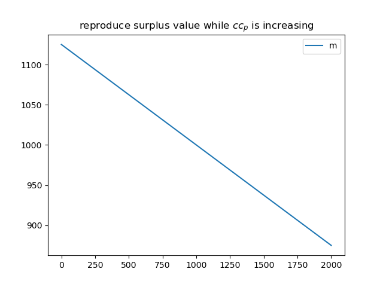

In general, we have known the normal functions of total capital and the surplus value in production.
一般地，我们已知生产中的总资本和剩余价值的一般函数。
capital_total = c + v
m = v × mr
In addition, we can get the function of rate of profit in production as follows:
另外，我们可以获得生产中的利润率函数如下：
$$pr = \frac{m}{capital\_total} = \frac{v \times mr}{c + v}$$
But now we add the parameters of reproduction into these functions and therefor enrich themselves. The surplus value had been created in the previous circle of capital is taken partly by capitalist as their personal income, and the rest part of it will be divided into constant and variable capital.
但现在我们把再生产的一些参数加到这些函数中，从而丰富它们本身。剩余价值在资本的上一次循环中所创造者，一部分被资本家当作他们的个人收入，其余部分又分为不变资本和可变资本。
mp = mgp − ccp
v = vp + vadd = vp + mp × vrr
Thus we can get the functions of surplus value and rate of profit in reproduction as follows:
由此可以得到再生产中剩余价值与利润率的函数如下:
m = (vp + (mgp − ccp) × vrr) × mr
$$pr = \frac{m}{c + v} = \frac{(v_p + (mg_p - cc_p) \times vrr) \times mr}{c_p + v_p + mg_p - cc_p}$$
capital_total: total capital.
capital_total: 总资本。
c: constant capital in this circle.
c: 本次循环中的不变资本。
v: variable capital in this circle.
v: 本次循环中的可变资本。
m: surplus value(m) created in this circle.
m: 本次循环中创造了的剩余价值。
mr: rate of surplus value(m) in this circle.
mr: 本次循环中的剩余价值率。
pr: rate of profit in this circle.
pr: 本次循环中的利润率。
cp: constant capital in previous circle.
cp: 上次循环中的不变资本。
vp: variable capital in previous circle.
vp: 上次循环中的可变资本。
mgp: gross surplus value(m) in previous circle.
mgp: 上次循环中的毛剩余价值。
mp: surplus value(m) in previous circle.
mp: 上次循环中的剩余价值。
ccp: income of capitalists in previous circle.
ccp: 上次循环中的资本家收入。
vadd: variable capital added in this circle.
vadd: 本次循环期初追加的可变资本。
vrr: reinvest rate of surplus value to variable capital in this circle.
vrr: 本次循环中剩余价值到可变资本的再投资比例。
The function of surplus value in reproduction can be written in Haskell as follow:
再生产中的剩余价值函数可用Haskell写成下面这样：
m vp mgp ccp vrr mr = (vp + (mgp - ccp) * vrr) * mr,
Or this function can be written in Python to find several relevant economic curves.
或者这一函数可用Python写，来找出若干相关的经济曲线。
import matplotlib.pyplot as plt
import matplotlib as mpl We can find some relations between special parameters.
我们可以找出特定的参数之间的一些关系。

In the function of surplus value in reproduction, we can find a negative parameter which represents the income of capitalists. That is to say, personal consume of capitalists will hinder the process of proliferation of capital in a certain way. For example, we change the capitalist income(ccp) step by step to see the changes of surplus value(m) influenced by this parameter.
在再生产中的剩余价值的函数中，我们可以找到一个消极的参数，它代表资本家的收入。也就是说，资本家的个人消费会以某种方式阻碍资本的增殖过程。比如，我们一步步地改变资本家的收入（ccp），来观察这个参数所影响的剩余价值（m）的改变。
As we can see, the increase of ccp will decreases m.
正如所见，ccp的增加会减少m。
The radio of the rate of surplus value to the rate of profit from the perspective of production:
生产视角下的剩余价值率与利润率之比：
$$\frac{mr}{pr} = (\frac{v}{c + v})^{-1}$$
The radio of the rate of surplus value to the rate of profit from the perspective of reproduction:
再生产视角下的剩余价值率与利润率之比：
$$\frac{mr}{pr} = (\frac{v_p + (mg_p - cc_p) \times vrr}{c_p + v_p + mg_p - cc_p})^{-1}$$
Index − 1 can not only complicates but also simplifies these functions and show the relations between mr and pr more clearly, so it is proper to use this index.
指数 − 1不仅可以复杂化也可以简化这些函数，并且更清晰地展现mr与pr之间的关系，所以用这个指数是合适的。
These function can only show some aspects of production and get rid of many important parameters and relations. So we should recognize these functions as special moments of logic.
这些函数只能反映生产的某些方面，并排除了许多重要的参数和关系。所以我们应该将这些函数认作特殊的逻辑环节。
For instance, it is critical to realize that the rate of variable capital will reduce continually in the total process of reproduction, etc.
例如，在整个再生产过程中，可变资本的比率会持续下降，等等。认识到这一点，是紧要的。
And these functions are kind of recursion, because the surplus value created now can be set as the original parameter in these functions themselves and then joins the next reproduction.
并且这些函数是一种递归，因为现在创造的剩余价值可以被设置为这些函数本身中的初始参数，并这样加入下次的再生产。
It seems that the reproduction of capitalism is infinite, but this point of view is innocent. The system of capitalism has its inner limits and will be destroyed by its own development.
看起来，资本主义的再生产是无限的，但这种观点是天真的。资本主义体系有其内在的局限性，并将被自身的发展所毁灭。